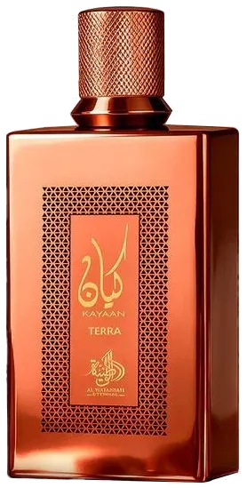

Kayaan Terra by Al Wataniah as an authentic decant — a Warm-Spicy, Woody, Smoky, Sweet, Oriental. inspired by Bottled Absolute. Ships across India with free shipping over ₹999 on 2+ decants.
| Size | Price | Per ml |
|---|---|---|
| 3ml | ₹105 | ₹35 |
| 5ml | ₹155 | ₹31 |
| 7.5ml | ₹229 | ₹31 |
| 10ml | ₹289 | ₹29 |
| 20ml | ₹535 | ₹27 |
| 30ml | ₹739 | ₹25 |
This fragrance is currently sold out for decants, but full bottles may be available — ask on WhatsApp.
Copy your choice and message us on WhatsApp — we confirm stock and payment instantly.
Order on WhatsAppCall +91 93555 33509Notes / profile: Warm-Spicy, Woody, Smoky, Sweet, Oriental.
Best for: Fall / Winter seasons, evening and night, for date-night, special-occasion, cold, mild weather.
Mood: Bold, Cozy.
Reminds me of: Bottled Absolute.
References: Fragrantica Parfumo
Learn how this decant is filled and verified.
Season: Fall, Winter.
Occasion: Date-Night, Special-Occasion.
Time of day: Evening, Night.
Weather: Cold, Mild.
Fragrance family: Oriental, Woody.
Made for: Unisex.
A 3ml decant is the smallest way to try this scent before committing to a larger size. New to decants? Read the decant vs full bottle guide, or see how to make perfume last longer.
It is a high-quality interpretation inspired by Bottled Absolute. Perfume enthusiasts in India often pick it as an affordable alternative to that profile.
IRAM Perfume sells authentic decants of Kayaan Terra by Al Wataniah at 3ml ₹105, 5ml ₹155, 7.5ml ₹229, 10ml ₹289, 20ml ₹535 and 30ml ₹739. Shipping is free on 2-decant orders above ₹999. Full bottles are available on request.
A unisex fragrance, it works best during Fall / Winter seasons, evening and night, for date-night, special-occasion, cold, mild weather. It leans bold,cozy in character with a Warm-Spicy, Woody, Smoky, Sweet, Oriental profile.